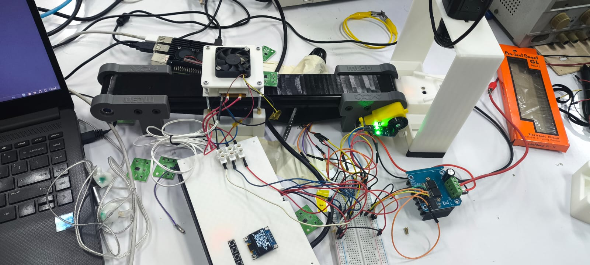
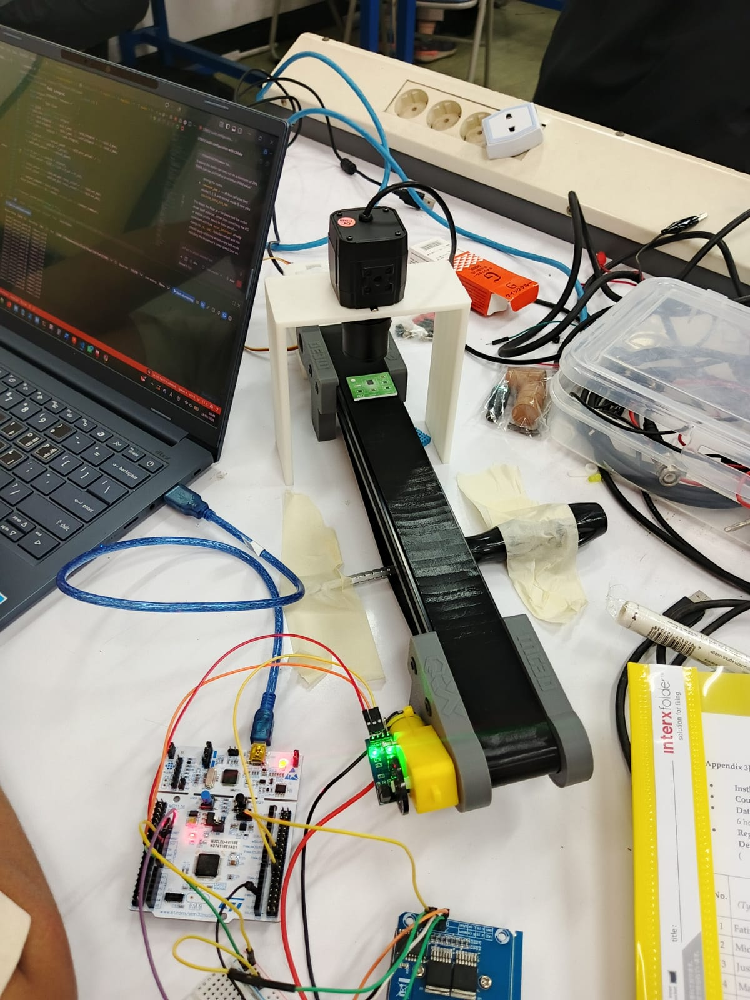
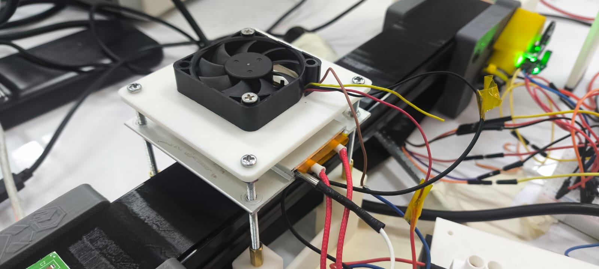
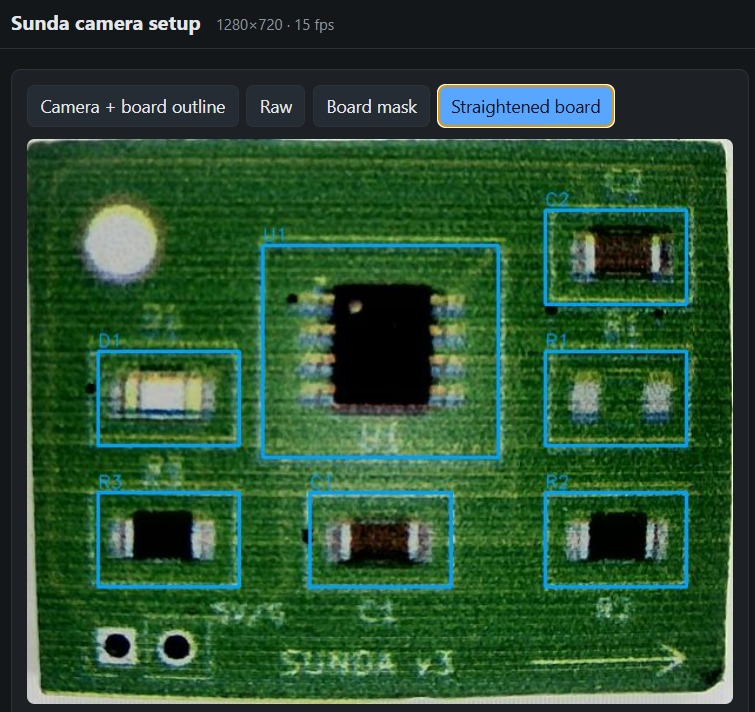
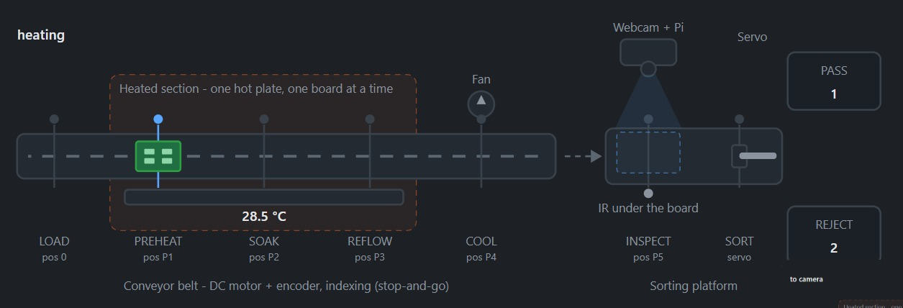

The project
The final project of the firmware training: design a multi-tasking embedded system that mirrors a real production line. Our team built a reflow line model where an STM32 microcontroller running FreeRTOS controls the heater, conveyor, sorter and operator panel, and a Raspberry Pi runs camera inspection and a dashboard.
I designed and implemented the conveyor system, and integrated it with the sorting system so each board ends up in the right lane.
A model, not a production oven. The heating profile runs in stages up to 120 °C
(60, 90, then 120 °C), well below real solder reflow temperatures, so no components are actually soldered.
The Sn63/Pb37 solder profile is in the firmware but intentionally locked until the heater and safety features are proven.
The boards on the line are stand-ins: a printed image of the test PCB mounted on a 3D-printed square block.





What I built
- Conveyor control. Motor and encoder control that moves each board to the heater, holds it there until the heating profile finishes, then carries it to the inspection point.
- Conveyor–sorting integration. Connected the conveyor to the sorting system so that each board arrives at the sorter and is routed according to its inspection verdict.
- Working within shared firmware. The conveyor runs as one task in the team's real-time firmware, cooperating safely with the heater and inspection tasks.
- Bench debugging. Debugged the conveyor drive and encoder, and the conveyor–sorting handover, through the diagnostic menu.
Result
- Every stage demonstrated on the prototype: transport, heating profile, inspection, sorting
- Conveyor stops the board at the heater, waits, and delivers it to inspection
- Sorter follows the pass/fail verdict